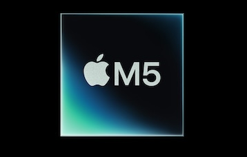

Most Recent
As we update our page as the new chipsets and news surrounding all Apple products come out check out our "Latest on Apple" page.
On that page, you will be able to track down any of the hottest items produced by apple at the current moment!
Welcome
The bite of Apple is a friendly tool intended to make understanding and the potential switch to apple very seemless for new and experienced users. We specialize mainly in the beuatiful art of the apple silicon chip that it is, with so much power comes great responsibility. At the end of the day it is up to you on how much you need, however any of our many guides will be here to help you make the right decision!
Apple silicon is an ever-growing topic that will non-stop change from year to year whether you like it or not! It is very important for all the different industries to stay informed on the latest news and changes to the silicon based apple manufactured chips. Although that number after the "M" may change by one, that does not mean the margin in performance is that miniscule. Stay up to date and informed using our tools!